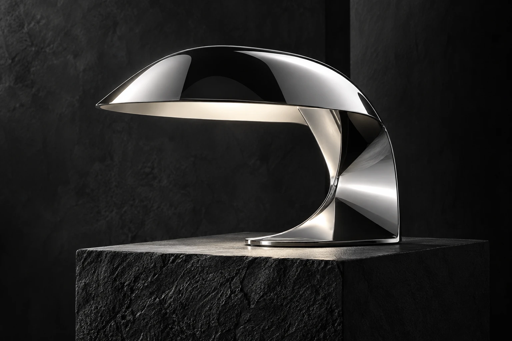

Что нужно сайту
Аудитория, цель, материалы и примеры. Определяем, какие действия должен совершить посетитель.
Для бизнеса, которому важно, как его видят. От первого экрана до последней кнопки.
Структура · дизайн · адаптивная вёрстка
Сайт должен показывать ваш продукт, отвечать на вопросы и помогать сделать следующий шаг.
Разрабатываю посадочные страницы и сайты-визитки. Продумываю порядок блоков, поведение на телефоне и переходы между экранами. Ниже — три примера разных визуальных подходов.
FORMA, OBJECT и PAUSE — придуманные бренды. Это работающие дизайн-концепты, созданные для этого портфолио, а не выполненные клиентские заказы.

Объём работы зависит от содержания и функций. Сначала обсуждаем задачу, затем согласуем структуру, стоимость и сроки.
Для одной услуги, продукта или события. Понятный маршрут от знакомства до обращения.
Один фокусО компании, работах и услугах. Навигация, которая помогает посетителю найти нужное.
Несколько разделовНовая подача существующего сайта: структура, типографика и удобство на телефоне.
Обновление подачиНа каждом этапе есть результат, который можно посмотреть и обсудить до следующего шага.
Аудитория, цель, материалы и примеры. Определяем, какие действия должен совершить посетитель.
Структура и ключевые экраны. Согласуем визуальный стиль до разработки остальных разделов.
Адаптивная вёрстка, переходы и состояния элементов. Проверяем кнопки, формы и мобильные экраны.
Финальная проверка, публикация и исходники. Обсуждаем, как вносить изменения после запуска.
Коротко опишите бизнес и задачу. Полезно знать, что должно быть на сайте и есть ли примеры, которые нравятся. Тексты и фотографии можно уточнить позже.
Адаптивная версия входит в обсуждение проекта с самого начала. Экраны, навигация и кнопки проверяются отдельно для телефона и компьютера.
Такие функции требуют отдельного согласования: сценарии, сервисы и серверная часть зависят от задачи. Демонстрационные сайты в этом портфолио показывают дизайн и интерфейсы; оплата к ним не подключена.
Показанные сайты — демонстрационные концепты. Названия брендов и изображения созданы для примера. Они позволяют оценить дизайн и поведение страниц без приписывания чужих заказов.
Напишите напрямую или заполните короткий бриф. Форма подготовит текст, который можно скопировать и отправить в Telegram.